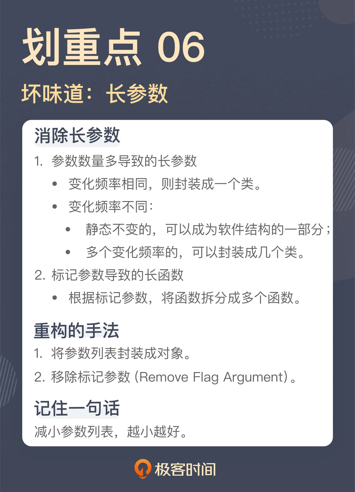

- 00 开篇词 这一次，我们从“丑”代码出发.md
- 01 缺乏业务含义的命名：如何精准命名？.md
- 02 乱用英语：站在中国人的视角来看英文命名.md
- 03 重复代码：简单需求到处修改，怎么办？.md
- 04 长函数：为什么你总是不可避免地写出长函数？.md
- 05 大类：如何避免写出难以理解的大类？.md
- 06 长参数列表：如何处理不同类型的长参数？.md
- 07 滥用控制语句：出现控制结构，多半是错误的提示.md
- 08 缺乏封装：如何应对火车代码和基本类型偏执问题？.md
- 09 可变的数据：不要让你的代码“失控”.md
- 10 变量声明与赋值分离：普通的变量声明，怎么也有坏味道？.md
- 11 依赖混乱：你可能还没发现问题，代码就已经无法挽救了.md
- 12 不一致的代码：为什么你的代码总被吐槽难懂？.md
- 13 落后的代码风格：使用“新”的语言特性和程序库升级你的代码.md
- 14 多久进行一次代码评审最合适？.md
- 15 新需求破坏了代码，怎么办？.md
- 16 熊节：什么代码应该被重构？.md
- 17 课前作业点评：发现“你”代码里的坏味道.md
- 结束语 写代码是一件可以一生精进的事.md
06 长参数列表：如何处理不同类型的长参数？
你好，我是郑晔。
前面两讲，我们分别讲了长函数和大类，它们都是那种“我一说，你就知道是怎么回事”的坏味道，而且都让我们深恶痛绝，唯恐避之不及。这样典型的坏味道还有一个，就是长参数列表。
好吧，我知道你的脑子里已经出现了一个长长的参数列表了。每个程序员只要想到，一个函数拥有几十甚至上百个参数，内心就难以平静下来。
那么，函数为什么要有参数呢？我们知道，不同函数之间需要共享信息，于是才有了参数传递。
其实，函数间共享信息的方式不止一种，除了参数列表，最常见的一种方式是全局变量。但全局变量会带给我们太多意想不到的问题，所以，在初学编程的时候，老师就会告诉我们，不要使用全局变量。从程序设计语言发展的过程中，我们也可以看到，取消全局变量已经成为了大势所趋。
但函数之间还是要传递信息的，既然不能用全局变量，参数就成了最好的选择，于是乎，只要你想到有什么信息要传给一个函数，就自然而然地把它加到参数列表中，参数列表也就越来越长了。
那么，长参数列表有啥问题呢？这个问题其实我在上一讲已经说过了，人脑能够掌握的内容有限，一旦参数列表变得很长，作为普通人，我们就很难对这些内容进行把控了。
既然长参数列表的问题是数量多，秉承我们一以贯之的思路，解决这个问题的关键就在于，减少参数的数量。
既然知道了解决方案的方向，那我们接下来就具体看看，有哪些方法可以减少参数的数量。
聚沙成塔
我们来看一段代码：
public void createBook(final String title,
final String introduction,
final URL coverUrl,
final BookType type,
final BookChannel channel,
final String protagonists,
final String tags,
final boolean completed) {
...
Book book = Book.builder
.title(title)
.introduction(introduction)
.coverUrl(coverUrl)
.type(type)
.channel(channel)
.protagonists(protagonists)
.tags(tags)
.completed(completed)
.build();
this.repository.save(book);
}
这是一个创建作品的函数，我们可以看到，这个函数的参数列表里，包含了一部作品所要拥有的各种信息，比如：作品标题、作品简介、封面 URL、作品类型、作品归属的频道、主角姓名、作品标签、作品是否已经完结等等。
如果你阅读这段代码，只是想理解它的逻辑，你或许会觉得这个函数的参数列表还挺合理，它把创建一部作品所需的各种信息都传给了函数，这是大部分人面对一段代码时理解问题的角度。不过，虽然这样写代码容易让人理解，但这不足以让你发现问题。
比如，如果你现在要在作品里增加一项信息，表明这部作品是否是签约作品，也就是这部作品是否可以收费，那你该怎么办？
顺着前面的思路，我们很自然地就会想到给这个函数增加一个参数。但正如我在讲“[长函数]”那节课里说到的，很多问题都是这样，每次只增加一点点，累积起来，便不忍直视了。
如果我们有了“坏味道”的视角，我们就会看到这里面的问题：这个函数的参数列表太长了。
怎么解决这个问题呢？
这里所有的参数其实都是和作品相关的，也就是说，所有的参数都是创建作品所必需的。所以，我们可以做的就是将这些参数封装成一个类，一个创建作品的参数类：
public class NewBookParamters {
private String title;
private String introduction;
private URL coverUrl;
private BookType type;
private BookChannel channel;
private String protagonists;
private String tags;
private boolean completed;
...
}
这样一来，这个函数参数列表就只剩下一个参数了，一个长参数列表就消除了：
public void createBook(final NewBookParamters parameters) {
...
}
这里你看到了一个典型的消除长参数列表的重构手法：将参数列表封装成对象。
或许你还有个疑问，只是把一个参数列表封装成一个类，然后，用到这些参数的时候，还需要把它们一个个取出来，这会不会是多此一举呢？就像这样：
public void createBook(final NewBookParamters parameters) {
...
Book book = Book.builder
.title(parameters.getTitle())
.introduction(parameters.getIntroduction())
.coverUrl(parameters.getCoverUrl())
.type(parameters.getType())
.channel(parameters.getChannel())
.protagonists(parameters.getProtagonists())
.tags(parameters.getTags())
.completed(parameters.isCompleted())
.build();
this.repository.save(book);
}
如果你也有这样的想法，那说明一件事：你还没有形成对软件设计的理解。我们并不是简单地把参数封装成类，站在设计的角度，我们这里引入的是一个新的模型。我在《软件设计之美》讨论[模型封装]的时候曾经说过，一个模型的封装应该是以行为为基础的。
之前没有这个模型，所以，我们想不到它应该有什么行为，现在模型产生了，它就应该有自己配套的行为，那这个模型的行为是什么呢？从上面的代码我们不难看出，它的行为应该是构建一个作品对象出来。你理解了这一点，我们的代码就可以进一步调整了：
public class NewBookParamters {
private String title;
private String introduction;
private URL coverUrl;
private BookType type;
private BookChannel channel;
private String protagonists;
private String tags;
private boolean completed;
public Book newBook() {
return Book.builder
.title(title)
.introduction(introduction)
.coverUrl(coverUrl)
.type(type)
.channel(channel)
.protagonists(protagonists)
.tags(tags)
.completed(completed)
.build();
}
}
创建作品的函数就得到了极大的简化：
public void createBook(final NewBookParamters parameters) {
...
Book book = parameters.newBook();
this.repository.save(book);
}
好，这里我们讨论消除长参数列表的一种方法，将参数列表封装成类。还记得我们前面提到的“如何扩展需求”这个问题吗？如果需求扩展，需要增加创建作品所需的内容，那这个参数列表就是不变的，相对来说，它就是稳定的。
或许你会问，那这个类就会不断膨胀，变成一个大类，那该怎么办呢？关于这一点，你可以回顾一下我们的[前一讲]，看看怎么解决大类的问题。
动静分离
把长参数列表封装成一个类，这能解决大部分的长参数列表，但并不等于所有的长参数列表都应该用这种方式解决，因为不是所有情况下，参数都属于一个类。
我们再来看一段代码：
public void getChapters(final long bookId,
final HttpClient httpClient,
final ChapterProcessor processor) {
HttpUriRequest request = createChapterRequest(bookId);
HttpResponse response = httpClient.execute(request);
List<Chapter> chapters = toChapters(response);
processor.process(chapters);
}
这个函数的作用是根据作品 ID 获取其对应的章节信息。如果，单纯以参数个数论，这个函数的参数数量并不算多。
如果你只是看这个函数，可能很难发现直接的问题。即便我们认为有问题，也可以用一个类把这个函数的参数都封装起来。不过，秉承我在这个专栏里讨论的一贯原则，绝对的数量并不是关键点，参数列表也应该是越少越好。针对这个函数，我们需要稍微分析一下这几个参数。
在这几个参数里面，每次传进来的 bookId 都是不一样的，是随着请求的不同而改变的。但 httpClient 和 processor 两个参数都是一样的，因为它们都有相同的逻辑，没有什么变化。
换言之，bookId 的变化频率同 httpClient 和 processor 这两个参数的变化频率是不同的。一边是每次都变，另一边是不变的。
我在《软件设计之美》中讲[分离关注点]时曾经讲到过，不同的数据变动方向也是不同的关注点。这里表现出来的就是典型的动数据（bookId）和静数据（httpClient 和 processor），它们是不同的关注点，应该分离开来。
具体到这个场景下，静态不变的数据完全可以成为这个函数所在类的一个字段，而只将每次变动的东西作为参数传递就可以了。按照这个思路，代码可以改成这个样子：
public void getChapters(final long bookId) {
HttpUriRequest request = createChapterRequest(bookId);
HttpResponse response = this.httpClient.execute(request);
List<Chapter> chapters = toChapters(response);
this.processor.process(chapters);
}
这个坏味道其实是一个软件设计问题，代码缺乏应有的结构，所以，原本应该属于静态结构的部分却以动态参数的方式传来传去，无形之中拉长了参数列表。
这个例子也给了我们一个提示，长参数列表固然可以用一个类进行封装，但能够封装出这个类的前提条件是：这些参数属于一个类，有相同的变化原因。
如果函数的参数有不同的变化频率，就要视情况而定了。对于静态的部分，我们前面已经看到了，它可以成为软件结构的一部分，而如果有多个变化频率，我们还可以封装出多个参数类来。
告别标记
我们再来看一个例子：
public void editChapter(final long chapterId,
final String title,
final String content,
final boolean apporved) {
...
}
这是我们在前面课程“[重复代码]”那一讲里提到过的一个函数，我们稍微复习一下，这几个参数分别表示，待修改章节的 ID、标题和内容，最后一个参数表示这次修改是否直接审核通过。
前面几个参数是修改一个章节的必要信息，而这里的重点就在最后这个参数上。
之所以要有这么个参数，从业务上说，如果是作者进行编辑，之后要经过审核，而如果编辑来编辑的，那审核就直接通过，因为编辑本身扮演了审核人的角色。所以，你发现了，这个参数实际上是一个标记，标志着接下来的处理流程会有不同。
使用标记参数，是程序员初学编程时常用的一种手法，不过，正是因为这种手法实在是太好用了，造成的结果就是代码里面彩旗（flag）飘飘，各种标记满天飞。不仅变量里有标记，参数里也有。很多长参数列表其中就包含了各种标记参数。这也是很多代码产生混乱的一个重要原因。
在实际的代码中，我们必须小心翼翼地判断各个标记当前的值，才能做好处理。
解决标记参数，一种简单的方式就是，将标记参数代表的不同路径拆分出来。回到这段代码上，这里的一个函数可以拆分成两个函数，一个函数负责“普通的编辑”，另一个负责“可以直接审核通过的编辑”。
public void editChapter(final long chapterId,
final String title,
final String content) {
...
}
public void editChapterWithApproval(final long chapterId,
final String title,
final String content) {
...
}
标记参数在代码中存在的形式很多，有的是布尔值的形式，有的是以枚举值的形式，还有的就是直接的字符串或者整数。无论哪种形式，我们都可以通过拆分函数的方式将它们拆开。在重构中，这种手法叫做移除标记参数（Remove Flag Argument）。
最近这三节课，我们讲了长函数、大类和长参数列表三种不同的坏味道，但在我们阐述了对于这些坏味道的理解之后，仔细想想这些坏味道，其实背后都是一件事：我们应该编写“短小”的代码。
这是由人类理解复杂问题的能力决定的，只有短小的代码，我们才能有更好地把握，而要写出短小的代码，需要我们能够“分离关注点”。
总结时刻
今天我们讲解的坏味道是长参数列表，它同样是一个“我一说，你就知道是怎么回事”的坏味道。
应对长参数列表主要的方式就是减少参数的数量，一种最直接的方式就是将参数列表封装成一个类。但并不是说所有的情况都能封装成类来解决，我们还要分析是否所有的参数都有相同的变动频率。
变化频率相同，则封装成一个类。
变化频率不同的话：
静态不变的，可以成为软件结构的一部分；
多个变化频率的，可以封装成几个类。
除此之外，参数列表中经常会出现标记参数，这是参数列表变长的另一个重要原因。对于这种标记参数，一种解决方案就是根据这些标记参数，将函数拆分成多个函数。
如果今天的内容你只能记住一件事，那请记住：减小参数列表，越小越好。

思考题
你曾经遇到的长参数列表有多长呢？你是怎样解决它的呢？欢迎在留言区分享你的经历。
也建议你“在教中学”，充分吸收理解这一讲的内容，并讲给自己的团队听。
感谢阅读，我们下一讲再见。
© 2019 - 2023 Liangliang Lee. Powered by Vert.x and hexo-theme-book.